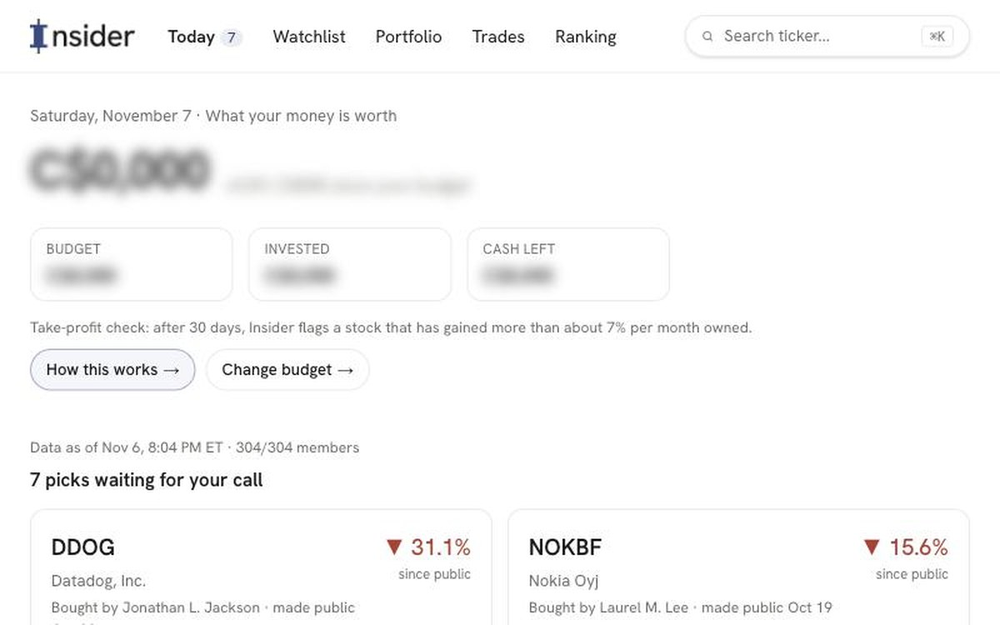
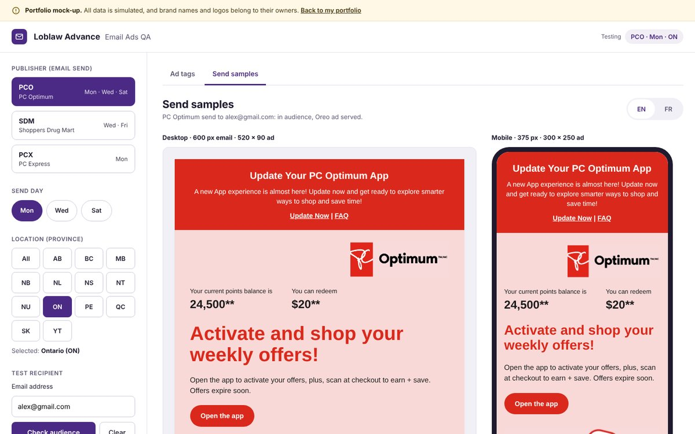
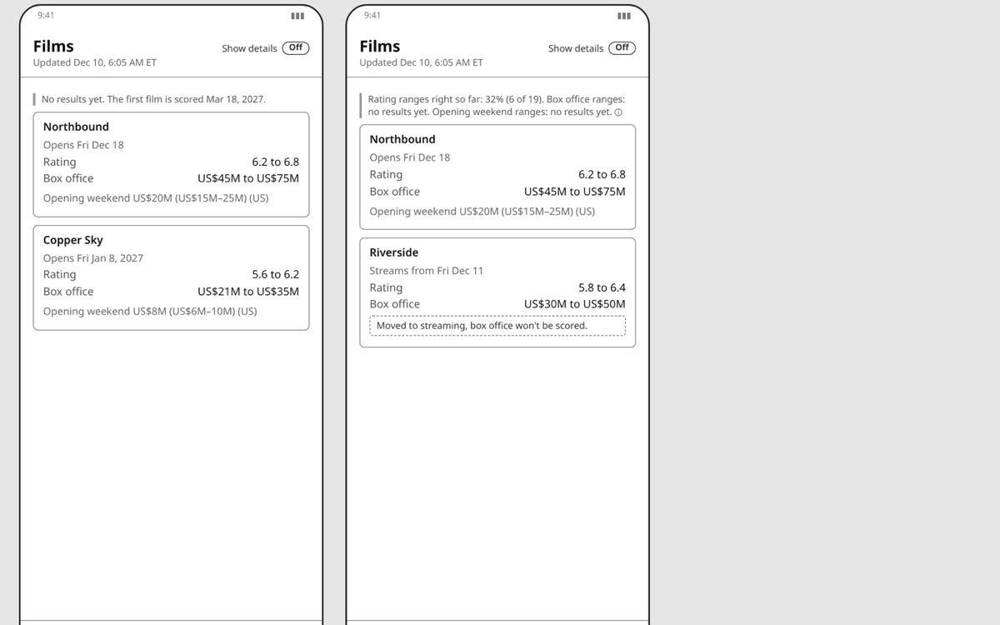

Hi, my name is
Sam Bavafa.
I build ad products people actually use.
I am a Senior AI/ML Product Manager in ad tech and retail media. I help advertisers understand how their campaigns really perform, and reach the right people with less guesswork.
01About me
Hi, I'm Sam. I build products that help advertisers understand how their campaigns really perform, and use new technology to reach their audiences better, faster, and cheaper.
I have had the chance to do this at very different scales: the retail media network of Canada's largest grocer, a programmatic ad platform serving tens of thousands of advertisers, a consumer research startup, and a retail startup I co-founded and grew to a national team. At each of them, great colleagues taught me something different about making decisions, moving fast, and building consensus.
What I enjoy most is turning messy data and complex technology into something simple that people use without thinking about it, often by building a rough version first to see if an idea holds up.
Outside of work, I build small side projects (a few are below), tinker with AI tools to make music and images, and travel whenever I can.
Here's what I've been focused on recently, and the tools I use:
- Programmatic advertising (DSP and SSP)
- LLM copilots and AI agents
- Measurement and attribution
- Recommender systems and personalization
- Audience segmentation
- SQL, BigQuery and Python
- Rapid prototyping
02Where I've worked
Senior Product Manager, Advertising Platform & Machine Learning @ Loblaw Advance
April 2025 – November 2026 · Toronto
- Owned advertiser reporting and measurement on LOOP, the reporting home for advertisers across on-site, in-store and off-site media.
- Owned the MediaAisle DSP, the in-house programmatic buying platform.
- Launched dynamic email ads as a new channel, and built an internal tool that lets AdOps check email ads before they go live, without test sends.
- Partnered on AI agents for audience building and campaign insights, contributing to product definition and to pre-release testing and quality of the insights agent, with a focus on measurement.
Product Consultant @ Data Crux Solutions
January 2024 – March 2025 · Vancouver
- Product and analytics consulting for retail and consumer app clients.
- Designed and built an AI product-recommendation tool for affiliate marketing.
- Used SQL to find an unexpected user segment in a consumer app, and led the product pivot toward it.
Product Manager @ Rival Technologies
November 2022 – September 2023 · Vancouver
- Owned the roadmap for an AI research tool on a mobile-first consumer research platform.
- Shipped an LLM copilot for survey creation and analysis, from roadmap to market, with engineering, design, sales and operations.
- Built targeted distribution and user profiling tools that improved respondent engagement while reducing over-messaging.
Product Data Analyst (Internship) @ Kixeye
June 2022 – September 2022 · Victoria
- Built real-time Looker dashboards on player engagement and analyzed acquisition payback in SQL for a multiplayer mobile strategy game.
Senior AI Product Manager @ Yektanet
February 2019 – August 2021 · Tehran
- The largest programmatic ad platform in its market (SSP and DSP). Led two agile teams of product, data science and engineering, building ML-driven ad products and their reporting and attribution interfaces.
- Launched real-time contextual matching that serves the most relevant ad for each page.
- Built a real-time audience segmentation engine that turned behavioural and contextual signals into shared audiences.
- Shipped a content recommender, validated through A/B tests and user interviews.
- Launched pre-roll video ads on the market's largest video platform.
Product Lead and Co-founder @ Rochi
December 2016 – February 2019 · Tehran
- Co-founded an online retail platform for garment producers and led its product end to end.
- Launched four product lines and a consumer app.
03Some things I've built

Side project · built end to end
Insider
- Next.js
- TypeScript
- Vercel
- GitHub Actions

Internal tool · built at Loblaw Advance
Email ads QA tool
- Replit
- Email ads
- QA

Side project · in design
Boxer
- Python
- Forecasting
- PRD
- Wireframes
Other noteworthy projects
Smart pricing for NYC listings
A model that suggests a competitive nightly price for a listing based on location and season.
- Python
- Regression
- EDA
What drives a good review
NLP on hotel reviews to find what makes guests happy or unhappy, compared across hotel classes.
- NLP
- Sentiment
- Python
Similar movies
Finds how alike two movies are from their plot summaries, the same idea behind contextual ad matching.
- NLP
- Clustering
Predicting music taste
Classifiers that predict whether a listener will like a song from its audio features.
- Decision trees
- k-NN
Cashtag pipeline
A data pipeline that measures how often stock cashtags show up in tweets.
- Python
- Social data
04. What's next?
Get in touch
I'm always happy to talk about ad tech, measurement, or AI products. Whether you have a role in mind, a question, or just want to say hi, my inbox is open.
Say hello